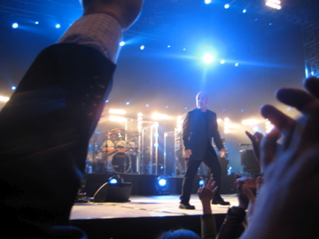

When I last left you all, which was probably months ago, as I’m pretty slow to update this website…we were trying to organize a trip to the world’s 7th most populous city, 3rd most populous metropolitan area in the world, Seoul, South Korea. We decided just winging it and hopping on a train to the third largest city in the world with no plan wasn’t a great idea so we did do a bit of planning, contrary to the backpacker acker way. I don’t know why but when scanning through the guide book, a guest house called “The Bong House” jumped out at us. (ok, I do know why)
We booked three rooms and the five of us set off from Busan, heading north 340 kilometeres (205 miles) to Seoul. The train that carries you there is an airplane with no wings, and it doesn’t leave the ground…ok…and it has no jet engines, the seats recline, there are no oxygen tanks, and no flight attendants telling you not stop drinking screwdrivers and taking your shirt off….wait…that doesnt happen to everyone? But besides that stuff, it’s basically an airplane. Here look, my friend Jason is such a skilled photographer, he managed to snap a shot of the train passing us at a whopping 310 km/hr. Damn this guy is good.
{kind=link}
But in all seriousness, the train reaches speeds of 300+ km/hr. When you are looking out the window at the passing countryside, it looks as though you are at the end of a runway and should be taking off at any second. I don’t know about you all, but its the point during take-offs when I look outside, get really nervous and start saying “Why the f havent we taken off yet? Is this guy driving me to Los Angeles? This runway has to be ending soon! God, I’m sorry, I didn’t know detentions were a bad thing! Please forgive my sins!!!” You know that’s when my palms get sweaty, I grasp the arm rests in a deathgrip and the little grandma next to me just smiles and watches. Then we finally lift off with out incident and I pretend to play it cool even though my shirt is now soaked with sweat and my heart is beating so hard I’m wondering if 25 year old dudes can have heart attacks. Did I mention I hate flying?
The bullet train experience consisted of lots of Soju drinking and playing cards. I volunteered to sit in the next row back because only 4 people were allowed at each table and well, I wanted to re-create my entire high-school experience in one train ride. Nothing like watching people having fun from a safe, awkward distance. ahhh high schoool……
I couldn’t hear what my friends were talking about so I’d drink my Soju, lunge my hand forward with an empty cup over the seat and request a “fill-up” By the 90 minute mark of the 3 hour journey, I was convinced the Korean 2 month-old baby behind me was speaking English to me. I swear he was saying English words, but it must have just been my imagination. Maybe that’s it though…maybe when English babies make all those crazy noises, they are speaking Korean and vice versa.
We arrived into Seoul 3 hours later and found our Bong House with out incident. The man who worked there was a cheerful fellow, almost to the point you thought we really were in a ‘bong’ house and he had just come from the “bong room” but alas this is Korea and thus impossible.
That night we went out to an area of Seoul that is known for foreigners (Americans) and shopping, not two of my most favorite things in the world…We were amazed to walk around and notice that at an inch under 6 foot and a whopping 160 lbs, I was the smallest man within miles. All around us were large large men with arms the size of my head with more tattoos than a Harley gang. It turns out this is where the United States Marine Corps goes to have a good time, as well as puke in the street, fight each other, run from Military Police, and flex. I had heard of the military curfew, so we ducked into a hole in the wall until they were all back in their “barracks” and we could roam the streets with out fear of a random fist fight of which we would have gotten crushed. It also didn’t help that Dave, the Englishman in our crew was walking around in his thickest Briitish accent saying “hello! fancy some tea?”
The next night we went to the Billy Joel concert, dubbed Joel in Seoul (by us). I’m not a huge Billy Joel fan but I do like most of his music and the tickets were only 35,000 won (roughly 20 US dollars). Our seats were remarkably good, off the side a bit, maybe 30 rows back. He came out and was fairly ornery, yelling directions to faceless roadies off-stage and sarcasticly remarking to the crowd “Does anyone here even speak English?” In fact, in the middle of “River of Dreams” (a great song)—security had spontaneously decided that people could no longer stand in front of the stage and had started to disperse them when Joel immediately stopped the song, stood up, yelled at security and flailed his arms like a baby who had just had his candy cane taken from him. (Youtube search Billy Joel Seoul and you should be able to find a video of his temper tantrum). We eventually made it to within 15 feet of the stage, due to what we shall call “whimpy security.” Here is our view…

{kind=link}
That night ended with some drinks and stumbling through Seoul until we found our hostel. When we left our hostel for the concert that night, we had one roommate, a strange fellow named “Mantis.” I wanted to ask him if he knew there was actually an insect in English named the praying mantis, but I didn’t want to piss this guy off. He was from Lithuania and was only in Seoul on a visa run from Japan. When we came back the next morning there was a random guy and a girl in the bed below me. At 7 a.m, the cheery hostel worker came in and tried to wake him to no avail. Later, upon awakening at 10:30 a.m. this was our conversation:
Weird guy: Dude, what time is it?
Me: Uh, it’s 10:30 man.
Weird guy: Oh shit, did I miss the DMZ tour?
Me: What time was it at?
Weird guy: 7:15 a.m.
Me: Uh, yeah, I’m pretty sure you missed it.
Weird guy: Aw shit man!
Me: Yeah, your laying on my jeans, can I have them?
Weird guy: (sleeping again)
The return trip home was uneventful, no Korean babies speaking English, no Soju drinking contests, just a really fast train taking us home…
A few odds and ends…(Sorry for the length of this post, if it’s too long, print it out and take it to the John if you must, if my friends had enough money to buy printers, I’m pretty sure most of them would have already done this)
I went to the United Nations Korean War Memorial in Seoul due to the fact mostly that my grandfather served in the Korean War or the “Forgotten War.” Over 50,000 U.S. soldiers died in the Korean war, 50,000, think about that for a second. It is a remarkable war to read about, and I encourage all of you to do so. If you read just a tiny bit about it, it’s amazing how close this peninsula was to being under total North Korean and China’s communist rule. The fact that my grandfather was sent to Busan 50 years ago and I am now teaching the grandchildren of the people he fought to protect is something that is pretty special, at least I think so.
For my Native English Club, an English after school club I started at my elementary school, I decided it was time the children of South Korea try one of my most favorite meals ever, Grilled Cheese. It started off great, with each child trying a half of a sandwich, soon thereafter, it all went downhill…here’s a sample:
{kind=link}
(student Kim John Gyeung walks up to me)
Kim: teacher, I want more.
me: Great! so you liked it?
Kim; teacher, can I have grilled cheese sandwich, no cheese?
me: So you want bread and butter?
Kim: oh yes teacher! thank you so much!
(7 more students come up to me with same request)
So grilled cheese wasn’t a big hit, I didn’t care though because I ended up making myself 6 sandwiches and quietly meandered the hallways of the school until I was alone in my teacher’s lounge taking care of the ‘leftovers’.
{kind=link}
{kind=link}
I also went on a hike today, it was a 5 mile hike on one of the bigger mountains in the city. The fact that it was 60 degrees a week before Christmas and beautiful sun shining all day made the hike that much better. Here are some shots from the hike…
{kind=link}
Fancy a game of footie?
{kind=link}
{kind=link}
my city
This website/blog will get very lively come three weeks. In three weeks, I will be taking off towards Thailand and Cambodia. Jan 9th I will arrive in Bangkok, spend a few days there and travel north 12 hours to a city called Chang Mai. It is known for excellent trekking and is supposed to be very very different than the south of Thailand. It is far more rural and has more of the Thai culture. I will spend a week up there visiting as many different villages/cities as I can. January 16th, I will head down to Bangkok to meet Jen and we will grab a bus heading towards Siem Reap in Cambodia. We would like visit Angkor Wat, ancient ruins dating back to the 12th century, we will sample the Cambodian food, culture, and whatever else we can find. From there we will head to Southern Thailand where we will enjoy our 16 day stretch island-hopping around the Thai islands. We have been around little Korean children for 4 straight months and now need a hammock, many beers, 87 degree weather, and amazing Thai food. From there I will be back for school February 9th. A month paid vacation in Thailand? Shit, I wasn’t getting that in Chicago.
and of course…I can’t leave you all without something so ridiculously Korean that it should at least make you smile…sometimes Korea, or any country for that matter you are traveling to are so different from what you know, it’s best not to judge and best to just accept it/them for what they are…(hell, that’s the art of traveling) well in this case, forget that, let’s all judge these people for one quick second when it comes to the style of their pets…
wait for it…
keep waiting…
{kind=link}
(yes ladies and gentlemen, that is a cat, and yes, it is shaved and has pink cheeks and pink tail)
from Kitty Crazy Korea,
backpacker acker
The reason the Koreans don’t like Grilled Cheese is because American cheese is one of the most disgusting substances known to man. And that is a scientific fact.
ew the kitty!!!
safe travels…i’m insanely jealous!